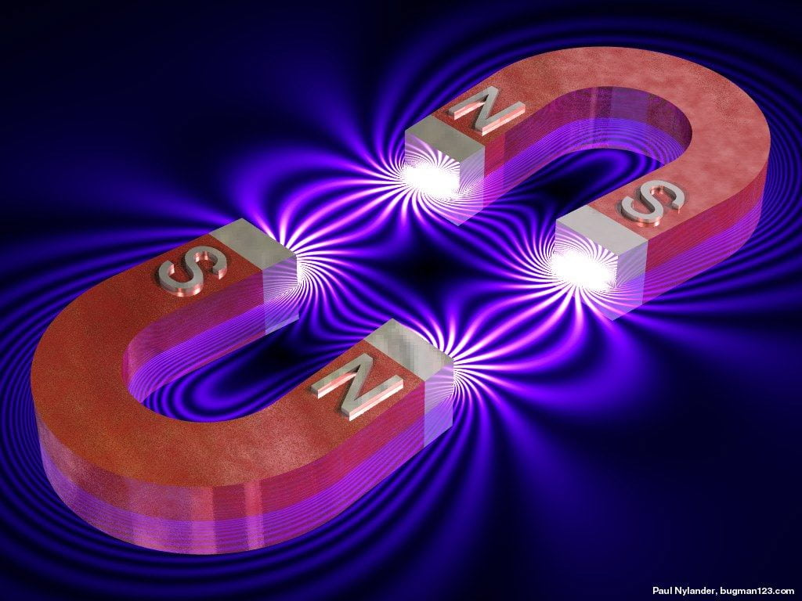
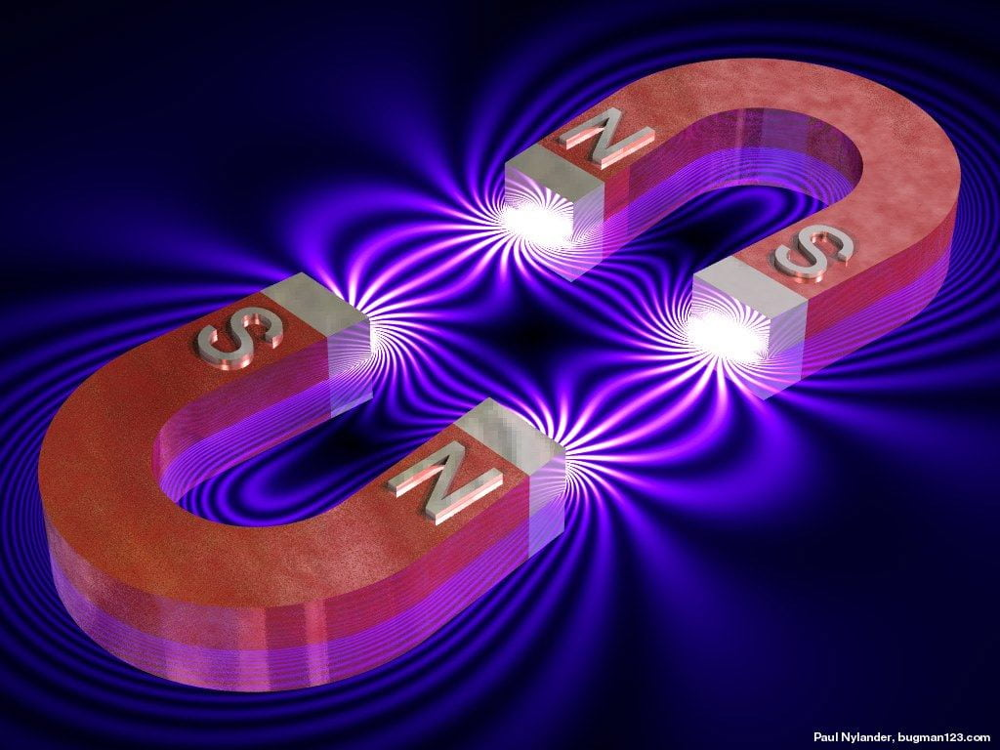
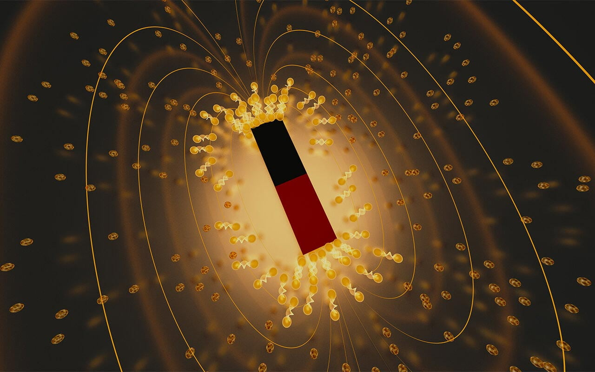
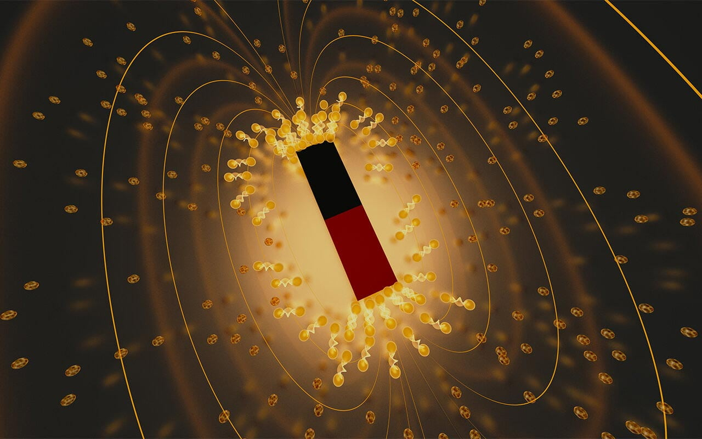
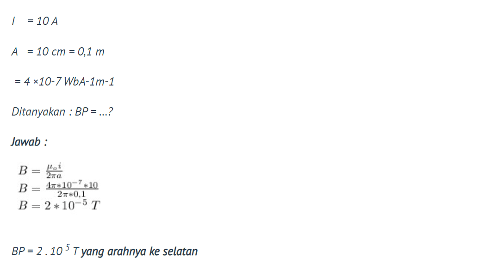
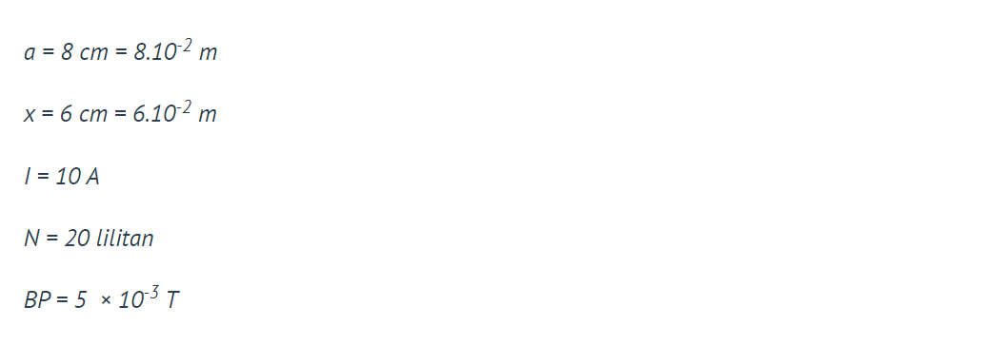
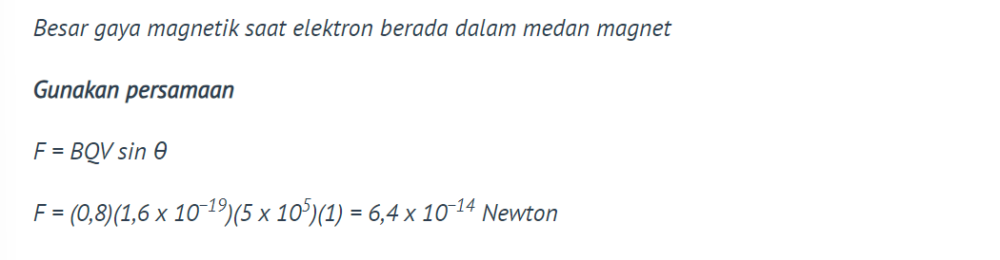
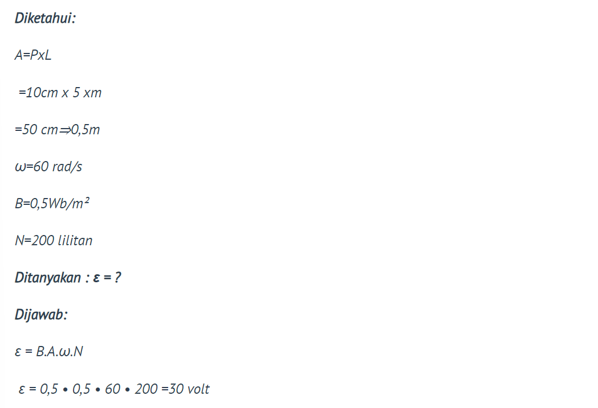

 


Medan Magnet
Medan magnet adalah wilayah di sekitar benda yang memiliki sifat magnetik di mana gaya magnetik dapat dirasakan. Medan ini diproduksi oleh muatan listrik yang bergerak, seperti arus listrik dalam kawat atau medan magnet yang dihasilkan oleh magnet permanen. Medan magnet dinyatakan dalam satuan Tesla (T) dalam sistem metrik.
Medan magnet memiliki dua sifat utama: arah dan kekuatan. Arah medan magnet diberikan oleh garis-garis medan magnet, yang menggambarkan jalur yang diikuti oleh partikel bermuatan yang ditempatkan di medan tersebut. Garis-garis medan magnet selalu membentuk loop tertutup, yang berarti mereka tidak pernah berakhir atau dimulai di suatu titik.
Kekuatan medan magnet di suatu titik ditentukan oleh kekuatan sumber magnet dan jaraknya dari sumber. Semakin dekat dengan sumber magnet, semakin kuat medan magnetnya, dan semakin jauh dari sumber, semakin lemah medan magnetnya.
Magnet adalah benda yang menghasilkan medan magnet berupa muatan yang bergerak.
Sifat-sifat magnet:
- Memiliki kutub utara dan selatan yang menghasilkan medan magnet.
- Tetap memiliki dua buah kutub meski magnet dipotong-potong.
- Dapat menarik benda ferromagnetik (mudah ditarik dan dijadikan magnet).
Contoh penerapan Induksi electro magnetic
Medan Magnet yang di timbulkan oleh arus listrik
Kawat lurus yang dialiri arus listrik akan menghasilkan medan magnet yang homogen untuk jarak yang sama dari kawat tersebut. Medan magnet yang dihasilkan membentuk lingkaran mengelilingi kawat dan arahnya ditentukan menggunakan kaidah tangan kanan. Ibu jari tangan kanan menyatakan arah arus listrik dan keempat jari lainnya yang menekuk menunjukkan arah medan magnet.
Pada penghantar lurus tak berhingga
Penghantar lurus tak berhingga adalah penghantar lurus yang diasumsikan memiliki panjang yang tidak terbatas. Ini adalah model teoritis yang digunakan dalam analisis fisika untuk mempelajari sifat-sifat medan elektromagnetik yang dihasilkan oleh penghantar panjang tak terbatas. Model ini membantu dalam memahami hukum-hukum elektromagnetik dan perilaku medan magnet dan medan listrik dalam sepanjang penghantar lurus yang tak terbatas.
Pada penghantar lurus berhingga
Penghantar lurus berhingga mengacu pada kawat atau kabel lurus dengan panjang yang terbatas. Ini adalah penghantar yang memiliki dimensi linear dan berbentuk garis lurus. Penghantar lurus berhingga digunakan dalam banyak aplikasi, seperti dalam rangkaian listrik, transmisi daya, dan komunikasi.
Pada pengahantar melingkar
Solenoida adalah jenis komponen elektronik yang terdiri dari kumparan kawat yang dililitkan dalam bentuk spiral atau lingkaran. Solenoida menghasilkan medan magnet saat arus listrik mengalir melalui kumparan tersebut. Medan magnet yang dihasilkan oleh solenoida sering digunakan dalam berbagai aplikasi, seperti elektromagnet, katup elektromagnetik, penggerak linear, dan banyak lagi. Solenoida juga digunakan dalam sistem kunci elektronik, motor listrik, dan perangkat lain yang memanfaatkan sifat magnetiknya.
Solenoida
Solenoida adalah komponen elektronik yang terdiri dari kumparan kawat yang dililitkan dalam bentuk spiral atau lingkaran. Ketika arus listrik mengalir melalui kumparan kawat ini, solenoida menghasilkan medan magnet yang sebagian besar terkonsentrasi di dalam solenoida. Solenoida digunakan dalam berbagai aplikasi, seperti elektromagnet, katup elektromagnetik, dan sistem penggerak linear.
Toroida
Toroid adalah bentuk geometris yang berbentuk tabung berongga dengan bagian dalam dan luar yang berbentuk lingkaran. Inti toroid umumnya terbuat dari bahan ferromagnetik dan dililiti dengan kumparan kawat. Toroid digunakan dalam pembuatan transformator toroid dan induktor toroid. Bentuk toroid memungkinkan medan magnet yang kuat dan konsisten di dalam toroid, sehingga efisien dalam menghasilkan induksi magnetik dan transfer energi dalam berbagai aplikasi elektronik.
Gaya Lorentz
Gaya Lorentz (F) adalah gaya yang timbul pada muatan yang bergerak dalam medan magnet
Gaya Lorentz adalah besaran vektor, dan arahnya ditentukan oleh kaidah tangan kiri Flemming (tegak lurus arus listrik dan medan magnet).
Gaya Lorentz merupakan konsep dalam fisika yang menggambarkan gaya yang dialami oleh suatu benda yang bergerak dalam medan magnetik dan medan listrik. Gaya ini dinamai sesuai dengan fisikawan Belanda bernama Hendrik Lorentz yang mempelajari interaksi antara muatan listrik dan medan elektromagnetik.
Gaya Lorentz pada muatan listrik yang bergerak dalam medan magnetik dapat menyebabkan benda tersebut mengalami gaya sentrifugal yang menjauhkannya dari jalur lurusnya. Ini dikenal sebagai efek Lorentz dan menjadi dasar bagi perangkat elektromagnetik seperti motor listrik dan generator.
Gaya Lorentz adalah konsep yang penting dalam pemahaman tentang interaksi antara medan listrik, medan magnetik, dan muatan listrik. Konsep ini juga menjadi dasar bagi bidang studi yang luas, seperti elektrodinamika dan fisika partikel.
Pada penghantar berarus di medan magnet

Pada muatan yang bergerak dalam medan magnet
Pada dua penghantar berarus sejajar
Gaya Lorentz menyebabkan penghantar saling menarik/menolak. Dua penghantar dapat saling menarik jika arus yang dihasilkan searah, dan saling menolak jika arus yang dihasilkan berlawanan.
Momen kopel (τ) adalah momen gaya yang timbul akibat gaya Lorentz sejajar yang berlawanan arah pada dua simpul kumparan.

6
FARRASI
FAHAR
ATHAYA
ARIBAWA
HISYAM
PRASETYA
HANAFI
WICAKSONO
ADI
PRASTOWO
Sebuah kawat lurus panjang yang dialiri arus listik sebesar 10 A dari arah timur ke barat. Tentukan besar dan arah induksi magnetik di titik P yang berada tepat di bawah kawat tersebut pada jarak 10 cm!
Jawaban : A
Penyelesaian
Sebuah kawat penghantar berbentuk lingkaran dengan jari-jari 8 cm dan terdiri atas 20 lilitan yang dialiri arus listrik sebesar 10 A. Besar induksi magnet di titik pusat lingkaran adalah
Jawaban : C
Penyelesaian
Sebuah positron yang bermuatan 1,6 x 10-19 C bergerak dengan kecepatan 5 x 105 m/s melalui medan magnet sebesar 0,8 T seperti gambar berikut. Besar gaya magnetik saat positron berada dalam medan magnet adalah
Jawaban : A
Penyelesaian
Suatu kumparan terdiri atas 200 lilitan berbentuk persegi panjang dengan panjang 10 cm dan lebar 5 cm. Kumparan tersebut memiliki sumbu putar yang tegak lurus medan magnet sebesar 0,5 T dan diputar dengan kecepatan sudut 60 rad/s. GGL maksimum yang timbul pada ujung-ujung kumparan adalah
Jawaban : B
Penyelesaian
Sebuah bidang seluas 100 cm2 ditembus secara tegak lurus oleh garis-garis gaya magnet yang kerapatannya 5 x 10-4 Wb/m2 . Besar fluks magnet yang dilingkupi bidang tersebut adalah
Jawaban : E